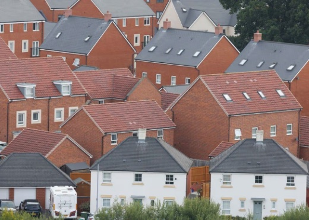

The energy and fabric standards
The New Build Heat Standard, in force from April 2024, bans gas boilers in new homes and requires zero direct emissions heating systems such as heat pumps. Enhanced energy standards introduced in February 2023 tightened fabric performance requirements significantly. A Scottish Passivhaus equivalent is being introduced as voluntary from 2026 and mandatory from 2028, requiring airtightness and insulation levels approaching Passivhaus certification.
The Scottish Government's own business impact assessment estimated that approaching Passivhaus-level fabric standards would add a further 2-3% to capital costs for new homes — approximately £300 million over ten years — on top of costs already added by the New Build Heat Standard and the 2023 energy uplift. For Highland Council, the cost of building a new council home has risen from around £200,000 per unit before Covid to around £300,000. The council's head of development has warned the Passivhaus standard will add "significant cost" and could lead to "a reduction in the number of units we're delivering." This is a council that wants to build homes. The building code is making it harder.
The environmental case is not serious
Scotland builds around 20,000 homes per year against a total housing stock of approximately 2.7 million. New homes represent less than 1% of stock annually. Imposing the highest possible energy standards on that 1% does not move the needle on Scotland's overall housing emissions. The Victorian tenements, the interwar semis, the post-war housing estates — where Scotland's actual energy problem lives — are untouched. The building code makes new homes expensive to build and does almost nothing for the climate.
This is not a difficult calculation. The Scottish Government has done it and pressed ahead regardless. The purpose served by these requirements is not environmental. It is to be seen to act on climate while doing nothing that inconveniences existing homeowners or requires the difficult political choices involved in retrofitting the existing stock.
The dual staircase threshold
Scotland requires two staircases in new residential buildings above 11 metres — roughly four storeys. England's equivalent threshold is 18 metres. Neither phase of the Grenfell Tower Inquiry recommended a dual staircase requirement. Scotland adopted one anyway, at a threshold nearly half that of England, without a published cost-benefit assessment, and has never reviewed it.
It does not protect the people already living in Scotland's tower blocks. Those buildings were built without the requirement and it does not apply to them retrospectively. The rule applies only to new construction. The people it affects are not residents of existing tall buildings. They are developers trying to build four-storey flats in Glasgow — and behind them, the people who cannot find suitable housing today because those flats were never built.
Centre for Cities found that the dual staircase requirement adds £22,500 per flat, reduces saleable floor area by 7%, and increases total build costs by 6-13%. The impact assessment for England's equivalent rule — at the higher 18-metre threshold — estimated £2.7 billion in costs over ten years for £9 million in benefits, a benefit-cost ratio of 0.0034. Scotland has imposed a more restrictive version, at a lower threshold, with no equivalent assessment.
The practical effect is to make the four-to-six storey flatted development best suited to Glasgow's urban infill sites the hardest category of housing to build. Developers respond rationally: build three storeys to stay under the threshold, or go significantly taller to spread the cost across more units. The middle is squeezed out.
We already know what good urban housing looks like
Walk down any street in the west end, Dennistoun, or Shawlands. The housing people most want to live in — the tenement, the four-storey sandstone stair, the six-flat close — was built before any of these regulations existed. Glasgow has a template for dense, walkable, human-scale urban housing that works. The building code has made it illegal to build more of it.
The vast majority of people in Scotland live in homes built before these rules came into force. The tenement is one of the most enduring and popular housing forms in the country. It is low-rise enough to need only one staircase, dense enough to make efficient use of urban land, and perfectly suited to the kind of infill development Glasgow needs. Scotland should be building tenements again. Instead it has introduced a regulatory framework that makes the tenement's modern equivalent — a four-storey flatted block — more expensive, more complex, and less viable than it has any reason to be.
Scotland has a housing emergency. It also has some of the most prescriptive building regulations in Europe. These two facts are not unrelated.
What regulation does to windows
Scotland's building regulations impose requirements on every window: fire escape openings, fall prevention restrictions on openable area within 800mm of floor level, trickle ventilation in every habitable room, and energy performance U-value standards. None of these requirements is applied with any consideration of what they collectively do to a building's appearance or to the quality of life of its residents.

The result, on estate after estate, is this: small, high-set windows that meet every regulation and admit as little light as possible. This is what a building code designed by people who do not have to live with the consequences looks like.
The burden falls hardest where it matters most
Homes for Scotland's 2025 SME survey found that the cumulative regulatory burden is driving smaller builders out of the market. Compliance costs cannot be spread across large volumes. Every new standard adds disproportionate cost and complexity to the firms most willing to build on smaller, more complex urban sites — precisely the sites that Glasgow's housing recovery depends on.
The result is a market increasingly dominated by large volume builders on large suburban greenfield sites. Not tenements. Not four-storey flatted blocks. Detached houses on the edge of town, where the regulatory burden is marginally easier to absorb and the land is cheap enough that the numbers still work.
What we are asking for
The Scottish Government should commission an independent cumulative viability assessment of Scotland's building code, measuring the total cost added by all regulatory requirements since 2020: the New Build Heat Standard, the 2023 energy standards uplift, the forthcoming Passivhaus equivalent, the 11-metre dual staircase threshold, accessibility requirements, and space standards.
Any requirement whose cost is disproportionate to its benefit should be suspended or simplified for the duration of the declared housing emergency. The 11-metre dual staircase threshold should be reviewed immediately, with a view to aligning with England's 18-metre limit — and with what the Grenfell Tower Inquiry actually recommended, which was not a dual staircase requirement at all.
A home that exists and meets reasonable standards is better — for its occupants and for the climate — than a Passivhaus-standard home that was never built because the numbers did not stack up.
£76,000 has been added to the cost of building an average new home since 2020, equivalent to more than 20% of the average new home value of £365,000. The report identifies a wave of new taxes, levies and regulations introduced since 2020 as the primary driver, affecting every stage of the building process from planning through to completion. Read the report →
The government's own assessment estimated that moving to energy standards approaching Passivhaus would add a further 2-3% to capital costs for new homes, resulting in a net increase of approximately £300 million over a ten-year policy period. The assessment acknowledged this was on top of costs already imposed by the New Build Heat Standard and the 2023 energy standards uplift. Read the assessment →
Highland Council's head of development confirmed that new council homes in the area have risen from around £200,000 per unit before Covid to around £300,000. Meeting the Passivhaus standard will add "significant cost" and will be "extremely challenging in rural areas," potentially leading to "a reduction in the number of units we're delivering." Read the article →
The dual staircase requirement adds £22,500 to the cost of every flat in new apartment buildings, reduces saleable floor area by 7%, and increases total build costs by 6-13%. The government's own impact assessment for England's 18-metre rule estimated £2.7 billion in costs over ten years against £9 million in benefits — a benefit-cost ratio of 0.0034. Neither phase of the Grenfell Tower Inquiry recommended a dual staircase requirement. Read the analysis →
96% of SME home builders said the speed of planning decisions had a very detrimental or detrimental impact on their business. The cumulative regulatory burden was consistently identified as a critical concern, with increased financial risk and engineering costs cited by 83% of respondents as a moderate, substantial, or major barrier. Smaller builders — the firms most likely to take on complex urban infill sites — are bearing the greatest cost. Read the survey →
The handbook states explicitly that "it is not desirable that dwellings or buildings consisting of dwellings have air-conditioning systems or use mechanical ventilation systems for cooling purposes" and that guidance is "intended to promote designs that avoid the need for such systems." Buildings must instead meet specific airflow requirements through passive or mechanical ventilation, constraining building form, orientation, and internal layout — on one of the cleanest electricity grids in Europe. Read the handbook →